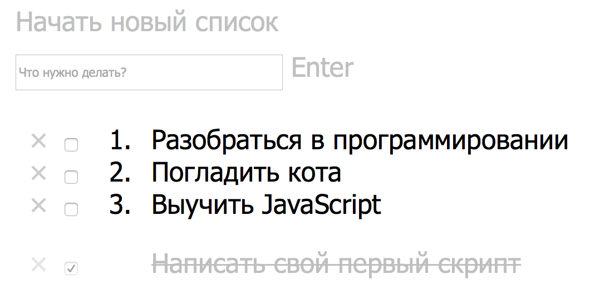
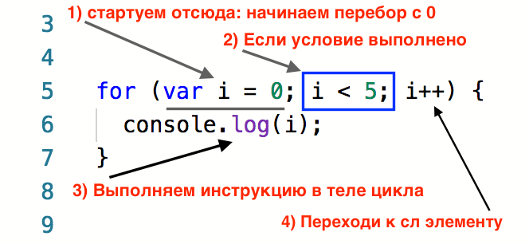

Афанасов Илья, PwC
Афанасов Илья PwC
Senior Web-Developer в PwC
Что выведет консоль?
let array = ['Работает?', 'Не работает?', 'Не', 'трогай.'];
array.splice(1, 1);
console.log( array );
[ ‘Работает?’, ‘Не’, ‘трогай.’ ]Метод splice позволяет удалять, изменять и вставлять элементы. В рамках нашей задачи он удалит элемент по индексу 1. А так как по этому индексу находится элемент со значением ‘Не работает?’, то удалится именно он.
Цикл - это инструмент, позволяющий делать однотипное действие много раз.
Пример: перебрать все числа от 1 до 10.
Пример из жизни:А какие примеры циклов знаете вы?
В программировании мы можем встретить вот такой реализованный пример цикла где выводится список задач:
В JavaScript существуют следующие операторы цикла:
Каждый оператор цикла выбирается под разные условия поставленной задачи. Таким образом оптимально выбирается способ перебора.
Повторение цикла по-научному называется «итерация»
Это цикл с предварительной проверкой условного выражения. Проще говоря у него все важное собрано в одном месте -> пока выполняется условие срабатывает инструкция
Цикл имеет такой синтаксис:
while (условие) {
инструкция
}
Выведем также 5 чисел:
let i = 0;
while (i < 5) {
console.log(i);
i++;
}
ВАЖНО
Пока условие выполняется срабатывает инструкция в теле цикла!!!
i++?В коде мы воспользовались странной записью i++. Это сокращенный способ записать выражение i=i+1.
И то, и другое выражение увеличивает значение переменной на единицу. Используйте то, которое вам кажется удобнее.
Выражение i++ называется инкремент. Есть еще декремент i--, он уменьшает значение переменной на единицу.
let i = 0;
while (i < 5) {
console.log(i);
i++;
}
Общий вид цикл for имеет такой:
for (начало; условие; шаг) {
// ... тело цикла ...
}
Итак мы поняли как выглядит цикл, так давайте выведем 5 чисел:
for (let i = 0; i < 5; i++) {
console.log(i);
}
// 0 1 2 3 4
Рассмотрим более пристально, что делает каждое выражение:
for (let i = 0; i < 5; i++) {
console.log(i);
}
Отличный вопрос, и пожалуй самый главный для 100% понимания работы циклов!
Давайте закрепим понимание цикла for на repl.it!
В основном циклы используются для выполнения итераций по элементам массивов.
Чтобы вывести значения массива с помощью цикла for, задействуем свойство массива length. Это поможет определить количество элементов в массиве и выполнить цикл такое же количество раз.
Рассмотрим работу на примере массива имен.
let names = ["Sasha", "Katya", "Vika", "Maria"];
for (let i = 0; i < names.length; i++) {
console.log(names[i]);
}
Например, мы можем печатать каждый второй элемент, двигаясь с шагом два:
let names = ["Sasha", "Katya", "Vika", "Maria"];
for (let i = 0; i < names.length; i = i+2) {
console.log(names[i]); // напечатаем только Катю и Вику
}
или по-разному выводить на печать в зависимости от индекса:
let names = ["Sasha", "Katya", "Vika", "Maria"];
for (let i = 0; i < names.length; i++) {
if (i % 2 === 0) { // для четных индексов
console.log("Это — " + names[i]);
} else {
console.log("Там — " + names[i]);
}
}
Помимо простого перебора элементов массива, мы можем выполнять и другие инструкции. Например заполнение.
Для этого создадим пустой массив, и в каждой итерации воспользуемся уже известным нам методом push:
(Кто знает, что делает метод push ?)
let array = [];
for (let i=0; i<5; i++) {
array.push(i);
}
console.log(array);
Получаем такой вывод:
// [ 0, 1, 2, 3, 4 ]
Давайте посмотрим ваше домашнее задание.
learn.javascript.rulearn.javascript.rulearn.javascript.ru
Спасибо за внимание! Время задавать вопросы
Афанасов Илья